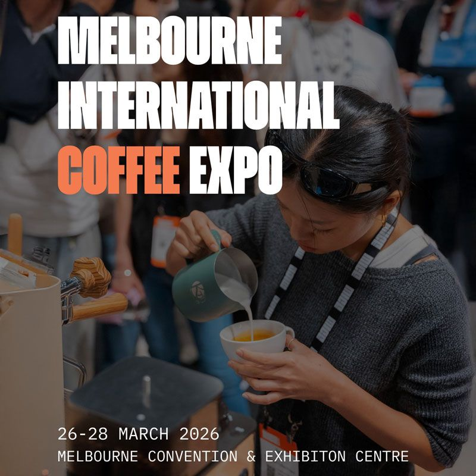

EVENT • MELBOURNE CBD
Melbourne Coffee Expo
A large coffee exhibition and networking event in Melbourne featuring coffee brands, roasting equipment, brewing tools, sensory workshops, and industry discussions. Visitors can explore new coffee trends, taste specialty coffee, and learn from professionals.